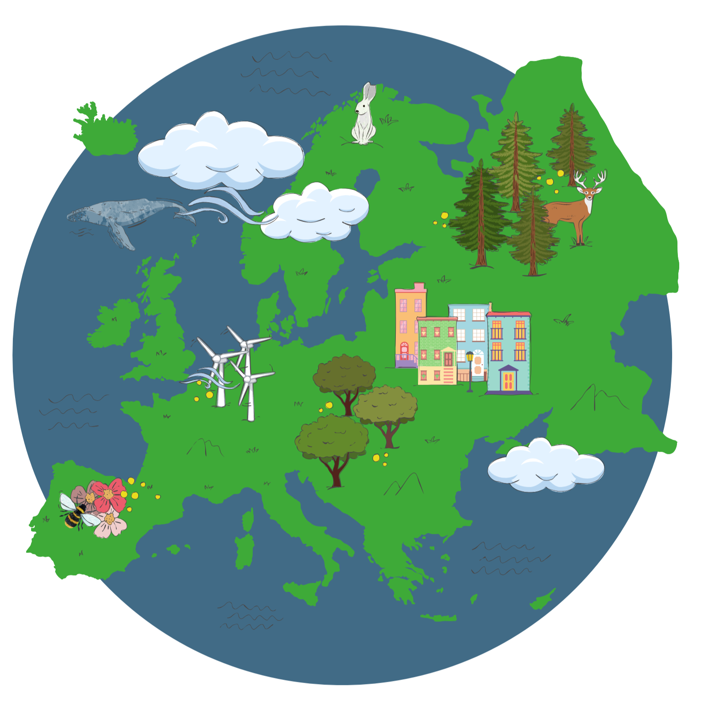

☰

MetaPlantCode is a collaborative and transnational project with the aim to test, optimize, and harmonize best practices for plant metabarcoding. We use case studies from complex environmental samples across Europe, in order to develop innovative and automated data processing pipelines and laboratory protocols. These innovativations developed through integration of diverse biodiversity data will close knowledge gaps on the state of biodiversity, and community level interdependencies and dynamics. The new techniques will be suitable for large-scale, long-term, high-throughput environmental monitoring with precision that was previously unattainable.
Learn more
Our highly productive annual meeting took place in the beautiful city Piatra Neamț from June 14th to 18th. More details will be shared shortly.

Members of our project team joint the Biodiversity Monitoring Conference in Montpellier France.
Find out more!
We recently conducted a short anonymous survey to better understand the needs, expectations, and challenges of our community in the field of plant metabarcoding. The responses are currently being evaluated and we’re excited to see what insights emerge. Your input will help us shape the future of MetaPlantCode!
To identify which grass species contribute to hay fever, the Botanic Garden Meise, Sciensano, and KU Leuven are now collecting airborne particles with a vacuum filter. The DNA is analyzed as part of the MetaPlantCode project.
Find out more!
Our midterm meeting took place in Paris from May 13 to 15, 2025. Over the course of three days, there was a lot of discussion, brainstorming, and exchange of ideas. This time, the main focus was on the final product of MetaPlantCode. Exciting things are ahead!
From Data to Decision – Supporting Hay Fever Management MetaPlantCode’s DNA based pollen monitoring will test, if the method can be integrated into public health strategies. Using plant metabarcoding, we will identify the exact grass species responsible for peak pollen seasons — a breakthrough for allergists and city planners. This data will enable targeted interventions, such as adjusting green space management in urban parks to reduce high-risk species. The results help to reduce hay fever cases and improve quality of life. This marks a shift from reactive symptom treatment to proactive, science-based environmental management.
Europe’s First Test Trial for a Standardized Soil Monitoring Network – From Arctic to Mediterranean MetaPlantCode is currently testing if soil-plant eDNA metabarcoding can be used to develop Europe’s first standardized plant-soil monitoring network. We currently use a unified protocol to detect plant traces across diverse ecosystems—from Arctic tundra to Mediterranean grasslands. In a series of test trials, we collect soil samples from different countries, applying a harmonized metabarcoding workflow to identify vegetation composition with unprecedented accuracy. If successfull, the tool can be adopted by national biodiversity monitoring programs, enabling routine, scalable, and cost-effective assessment of ecosystem health. This breakthrough will support EU climate adaptation policies, early warning systems for biodiversity loss, and transnational conservation planning — proving that even the smallest soil samples can reveal the vegetation of Europe’s landscapes.
A Pan-European Early Warning System for Endangered Plants MetaPlantCode has the potential to support Europe’s first early warning system for red-listed plant species, using eDNA metabarcoding to detect rare and threatened plants. Through standardized field sampling, lab protocols, and AI-enhanced analysis pipelines — powered by curated reference databases, mobilized red lists, checklists, and floras — we will identify endangered species at low abundance, and support monitoring activities. The here developed workflows, pipelines and services can be integrated into national biodiversity infrastructures and national monitoring programs, allowing authorities to respond proactively to population declines. This breakthrough will strengthen the EU’s Biodiversity Strategy, support the Kunming-Montreal Global Biodiversity Framework.